Fegyverek és páncélok
Itt megismerheted a fegyverek mennyországát mint például egy szaftos bolter gun használatát mely acélból lett összetákolva vagy egy plasma cannon amit hátadon viszel akkor minden lányt megkapsz és a szeretőiknek a házát egy pillantás alatt a földel fogod egyenlővé tenni.
Fegyverek és páncélok listája (Space Marine)
| Fegyver típusa | Leírás | Kép |
|---|---|---|
| Bolter Gun | Egy erőteljes, nagy sebességű lövedékeket kilövő fegyver, amely ideális a közepes távolságú harcokhoz. |  |
| Plasma Cannon | Egy energia alapú fegyver, amely képes hatalmas pusztítást okozni, különösen hatékony páncélozott célpontok ellen. |  |
| Power Sword | Egy közelharci fegyver, amely képes átvágni a legtöbb anyagot, ideális a gyors és halálos támadásokhoz. |  |
| Frag Grenade | Egy robbanó eszköz, amelyet a gyalogos egységek használnak a tömeges pusztítás érdekében. | 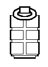 |
| Power Armor | Egy fejlett páncélzat, amely növeli a viselője erejét és védelmet nyújt a különböző támadások ellen. | 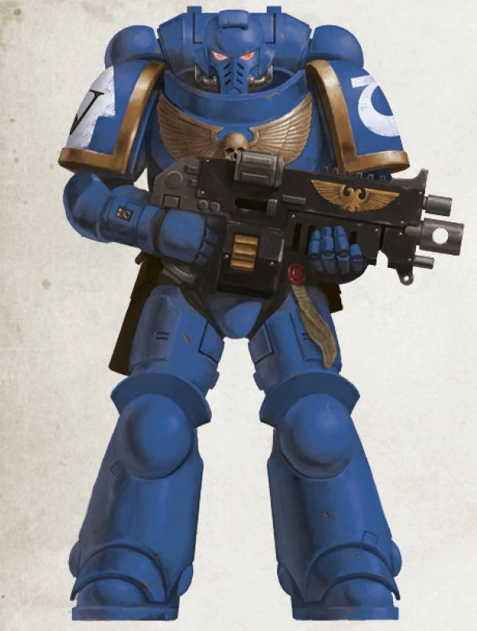 |
| Chainsword | Egy láncfűrész-szerű közelharci fegyver, amely rendkívül hatékony a gyalogsági egységek ellen. | 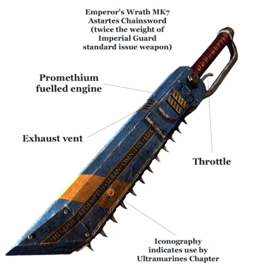 |
| Sniper Rifle | Egy hosszú távú fegyver, amely precíziós lövéseket tesz lehetővé, ideális a távoli célpontok likvidálására. | 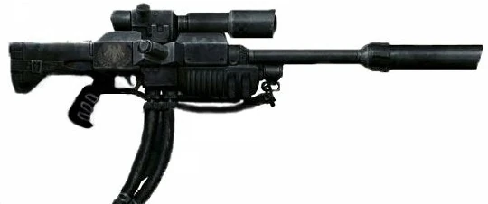 |
| Flamer | Egy lángszóró típusú fegyver, amely képes területet tisztítani és ellenséges egységeket elpusztítani. | 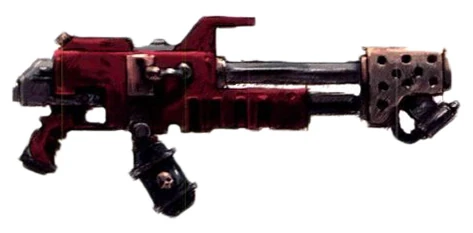 |
| Missile Launcher | Egy rakétavető fegyver, amely nagy hatótávolságú robbanó lövedékeket lő ki, ideális járművek és erődítmények ellen. | 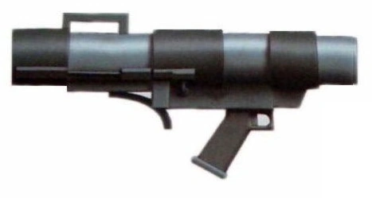 |
| Lasgun | Egy alapvető lézerfegyver, amelyet a császári gárda használ, megbízható és könnyen kezelhető. | 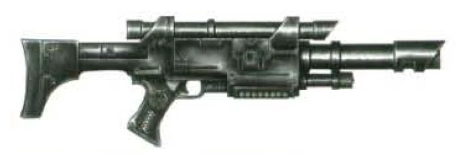 |
| Heavy Bolter | Egy nagy tűzerővel rendelkező bolter változat, amelyet járművekre és álló helyzetben használnak a csatatéren. | 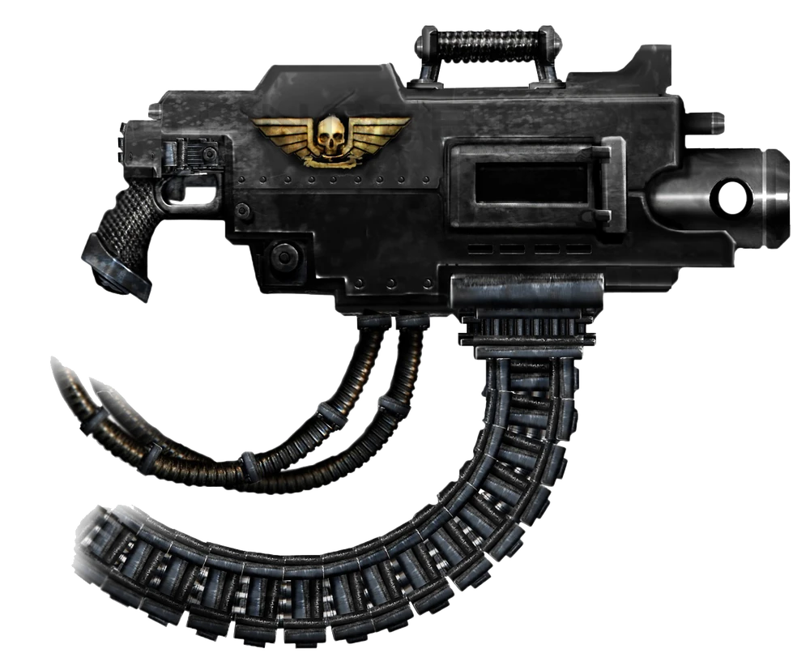 |
| Storm Shield | Egy erős védelmi eszköz, amely jelentősen növeli a viselője túlélési esélyeit a csatatéren. | 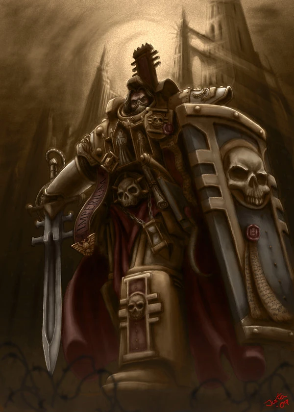 |
| Auto Cannon | Egy gyors tüzelésű gépágyú, amely hatékony a könnyű páncélzatú célpontok ellen. | 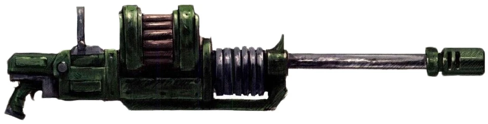 |
Fegyverek és páncélok listája (Ork)
| Fegyver típusa | Leírás | Kép |
|---|---|---|
| Slugga | Egy alapvető lőfegyver, amelyet az orkok használnak, megbízható és könnyen kezelhető. | 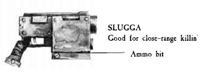 |
| Big Shoota | Egy nagy tűzerővel rendelkező gépágyú, amelyet az orkok használnak a csatatéren. | 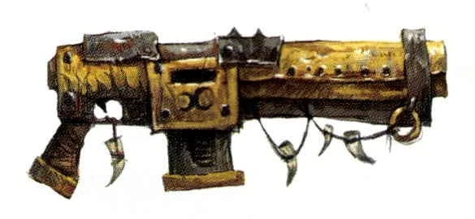 |
| Choppa | Egy közelharci fegyver, amelyet az orkok használnak a gyors és halálos támadásokhoz. | 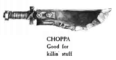 |
| Rokkit Launcha | Egy rakétavető fegyver, amely nagy hatótávolságú robbanó lövedékeket lő ki, ideális járművek és erődítmények ellen. | 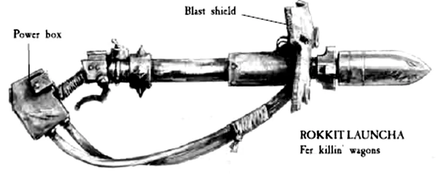 |
Fegyverek és páncélok listája (Elda)
| Fegyver típusa | Leírás | Kép |
|---|---|---|
| Shuriken Catapult | Egy gyors tüzelésű fegyver, amely éles shurikeneket lő ki, ideális a könnyű páncélzatú célpontok ellen. | 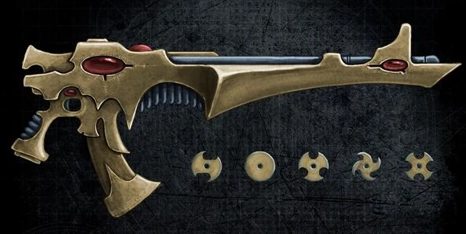 |
| Bright Lance | Egy energia alapú fegyver, amely képes hatalmas pusztítást okozni, különösen hatékony páncélozott célpontok ellen. | 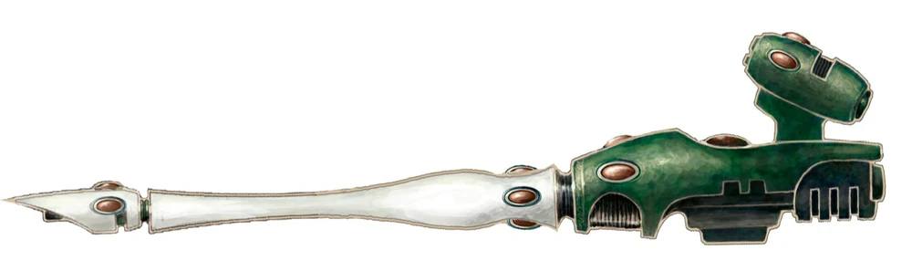 |
| Executioner | Egy közelharci fegyver, amely képes átvágni a legtöbb anyagot, ideális a gyors és halálos támadásokhoz. | 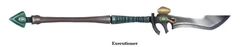 |
Fegyverek és páncélok listája (Tau)
| Fegyver típusa | Leírás | Kép |
|---|---|---|
| Pulse Rifle | Egy energia alapú fegyver, amely gyors tüzelést tesz lehetővé, ideális a közepes távolságú harcokhoz. | 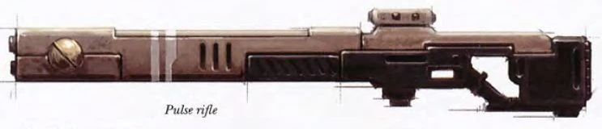 |
| Plasma Rifle | Egy erőteljes energia fegyver, amely képes hatalmas pusztítást okozni, különösen hatékony páncélozott célpontok ellen. |  |
| Drone Controller | Egy speciális eszköz, amely lehetővé teszi a tau harcosok számára, hogy irányítsák drónjaikat a csatatéren. | 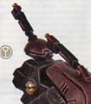 |
Fegyverek és páncélok listája (Chaos Marine)
| Fegyver típusa | Leírás | Kép |
|---|---|---|
| Bolter of Chaos | Egy erőteljes, nagy sebességű lövedékeket kilövő fegyver, amely ideális a közepes távolságú harcokhoz. | 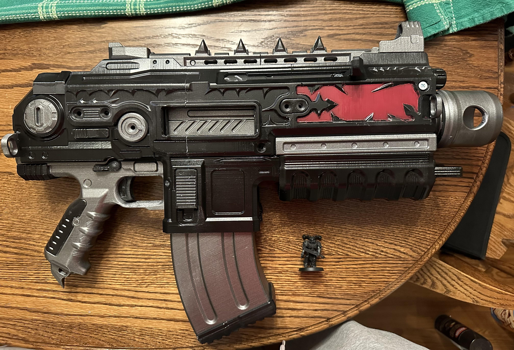 |
| Daemon Sword | Egy közelharci fegyver, amely képes átvágni a legtöbb anyagot, ideális a gyors és halálos támadásokhoz. | 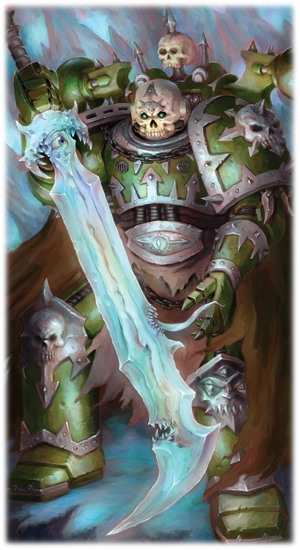 |
| Plasma Gun of Chaos | Egy energia alapú fegyver, amely képes hatalmas pusztítást okozni, különösen hatékony páncélozott célpontok ellen. | 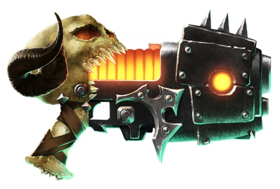 |